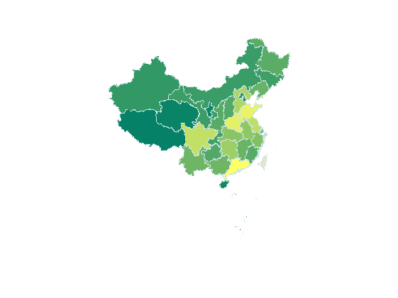

Contents
%-- 分省中国地图在MATLAB中的画法 --% % Author: gaospecial@gmail.com % Date: 2012-6-5 14:04:01 % 地图数据来源：国家基础地理信息系统网站 % 人口数据来源：国家统计年鉴2011版
载入地图数据
载入各省的多边形数据
sheng=shaperead('maps/bou2_4p.shp', 'UseGeoCoords', true);% 省 % 检查数据发现中午名称为乱码，可能是由于字符编码引起的，需要纠正文件导入时出现的乱码 % 中文名称记录在相应的dbf文件中，可以使用Excel打开，并且不会出现乱码，截取其中的中文保存为文本文件 % 然后在导入工作区，并将其保存为*.mat格式文件，随用随取。 % 依次替换sheng数据中的乱码【算是变通之法，有谁知道更好的方法一定告诉我哦】 load chinese_name.mat % 省，省会，主要城市的正确中文 for i=1:length(sheng) sheng(i).NAME=sheng_chinese_name{i}; % 纠正中文显示错误 end unique(sheng_chinese_name) % 含有34个省（直辖市）的数据 length(sheng) % 共分为925个区块
ans =
'上海市'
'云南省'
'内蒙古自治区'
'北京市'
'台湾省'
'吉林省'
'四川省'
'天津市'
'宁夏回族自治区'
'安徽省'
'山东省'
'山西省'
'广东省'
'广西壮族自治区'
'新疆维吾尔自治区'
'江苏省'
'江西省'
'河北省'
'河南省'
'浙江省'
'海南省'
'湖北省'
'湖南省'
'甘肃省'
'福建省'
'空'
'西藏自治区'
'贵州省'
'辽宁省'
'重庆市'
'陕西省'
'青海省'
'香港特别行政区'
'黑龙江省'
ans =
925
使用importdata向导导入2011年全国31个省的人口数据
data为人口数目 textdata为省名称
d=importdata('renkou.txt'); data=d.data; % 人口数目 textdata=d.textdata; % 相对应的省的名称
定义地图参数
针对不同省份，分别设置不同的颜色（FaceColor） 定义颜色
k=128; mycolormap=summer(k); % 生成不同区域按大小的颜色，按照人口数目多少分别指定不同的颜色 % 人口越多，颜色越突出 geoname={sheng.NAME}'; max_data = max(data); n=length(data); mysymbolspec=cell(1,n); % 预定义变量可以加快处理速度 for i=1:n count=data(i); mycoloridx=floor( k * count / max_data ); mycoloridx(mycoloridx<1)=1; myprovince=textdata{i}; geoidx=strmatch(myprovince, geoname); if numel(geoidx) > 0 province_name=geoname( geoidx(1) ); mysymbolspec{i} = {'NAME', char(province_name), 'FaceColor', mycolormap( mycoloridx, :) }; end end
显示地图
figure ax=worldmap('china'); % 使用worldmap的坐标轴作图 setm(ax,'grid','off') % 关闭grid setm(ax,'frame','off') % 关闭边框 setm(ax,'parallellabel','off') % 关闭坐标轴标记 setm(ax,'meridianlabel','off') % 关闭坐标轴标记 % 最关键的两个语句 symbols=makesymbolspec('Polygon',{'default','FaceColor',[0.9 0.9 0.8],... 'LineStyle','--','LineWidth',0.2,... 'EdgeColor',[0.8 0.9 0.9]},... mysymbolspec{:}... ); geoshow(sheng,'SymbolSpec',symbols); % 此处用mapshow投影会不正确
图的标注
在图像右侧显示bar
colormap(summer(k)) hcb=colorbar('EastOutside'); step=round(max_data/11); set(hcb,'YTick',(0:.1:1)) set(hcb,'YTickLabel',num2cell(0:step:max_data)) % 给图像加标题 title('中国2011年各省人口数（万人）')